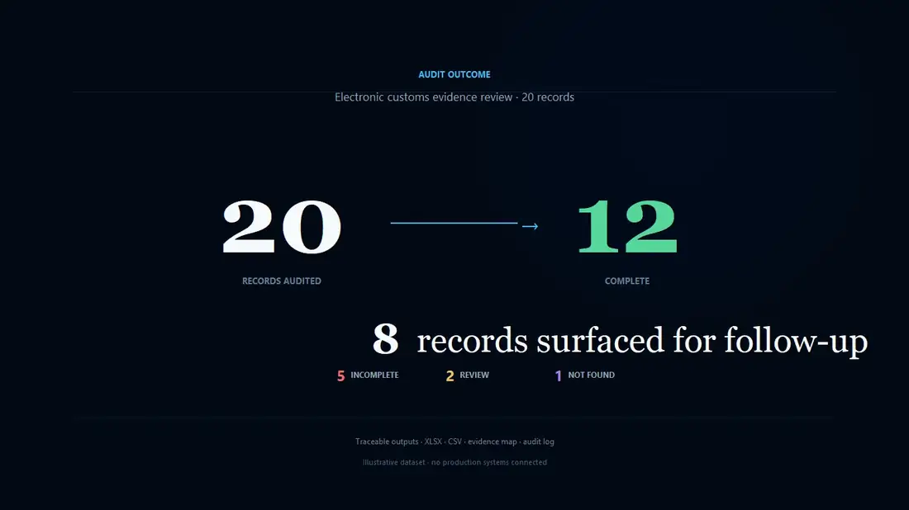
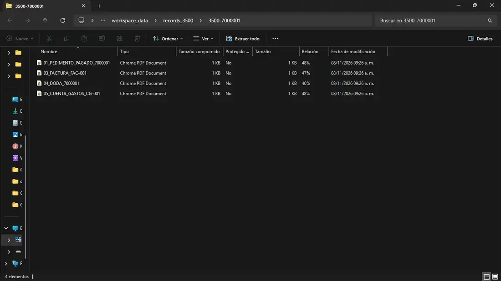
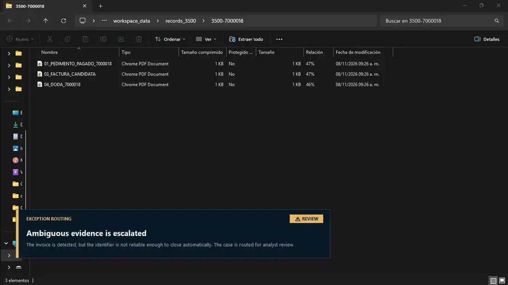
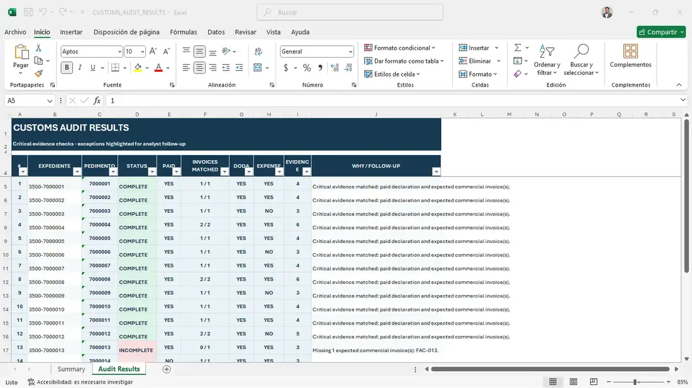

Locate
Match the expected customs record to its compressed archive.
A portfolio-safe reconstruction of a Python workflow that inspects compressed customs-record archives, maps documentary evidence, surfaces exceptions and produces traceable audit outputs.

Synthetic portfolio dataThe video follows the complete desktop sequence: source records, matched evidence, exception routing, batch processing, Excel reporting and the final operational outcome.
Match the expected customs record to its compressed archive.
Read the archive contents and classify documentary evidence.
Check the paid declaration and expected commercial invoice references.
Assign COMPLETE, INCOMPLETE, REVIEW or NOT FOUND based on evidence quality.
Write traceable XLSX, CSV, evidence-map and audit-log outputs.
The public reconstruction keeps the decision engine inspectable: archives are discovered, document signals are normalized, expected references are matched and uncertain evidence is routed instead of silently accepted.

A record becomes COMPLETE when the critical documentary evidence can be matched reliably. Optional evidence remains visible without blocking a valid determination.

When commercial evidence exists but its identifier cannot be trusted, the workflow sends the record to REVIEW rather than forcing an automated pass/fail decision.
Each row represents one audited expediente. The report keeps the operational determination next to the evidence checks and a concise reason for the result.
Download sample XLSX
This repository is a reconstruction for portfolio use. It contains no company credentials, production customs records, internal URLs or proprietary production source code. Identifiers and documents shown in the demo are synthetic.